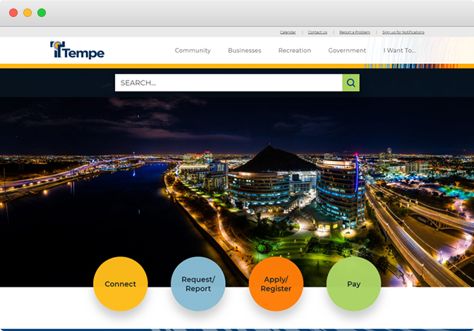
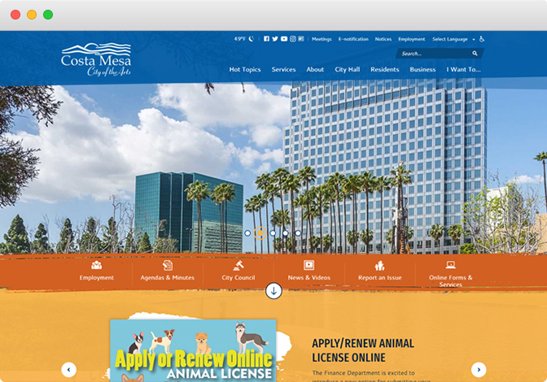
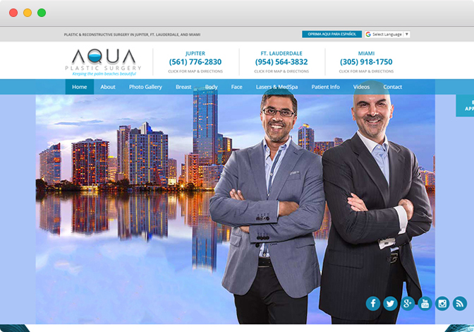
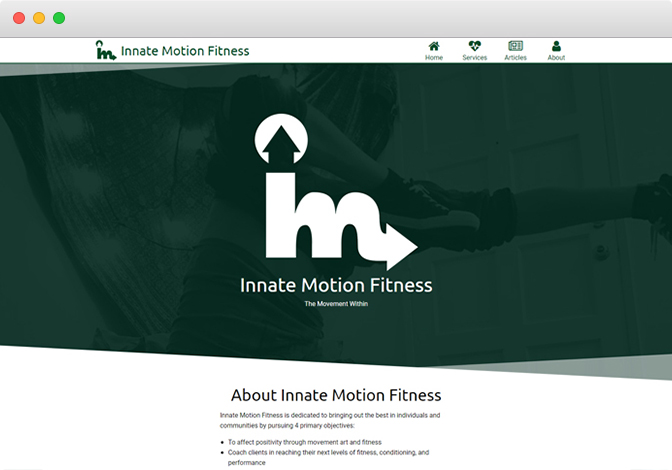

and I develop websites
tempe.gov
With a focus on parallax, animations and hovers, I constructed this site to push the boundaries of government website design.
Websitecostamesaca.gov
Figuring out layering and the geometric design proved to be challenging, but building this site was ultimately rewarding.
Websiteaquaplasticsurgery.com
I used WordPress to flesh out this information-centric design. The name of the game was to keep the website flow interesting for visitors.
Websiteinnatemotionfitness.com
I collaborated with my friend to develop this site for his company. The emphasis was on minimalism, geometry, and intuition.
Website